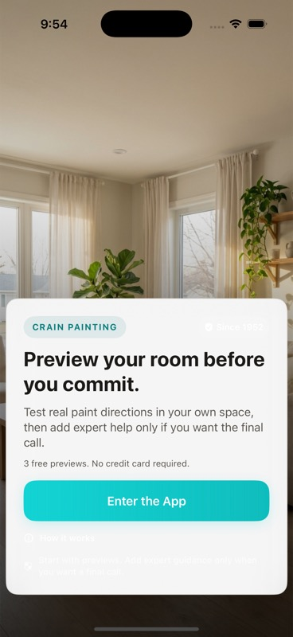
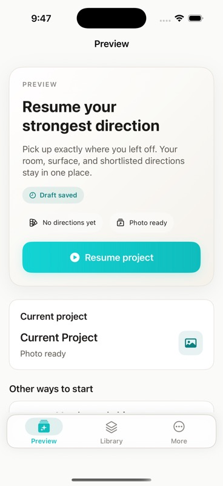
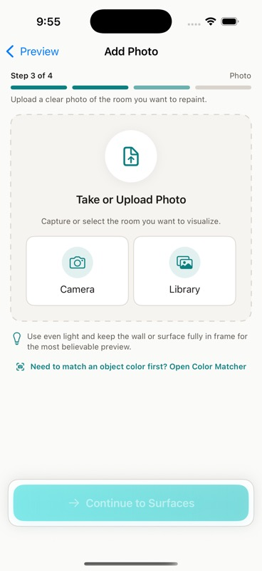
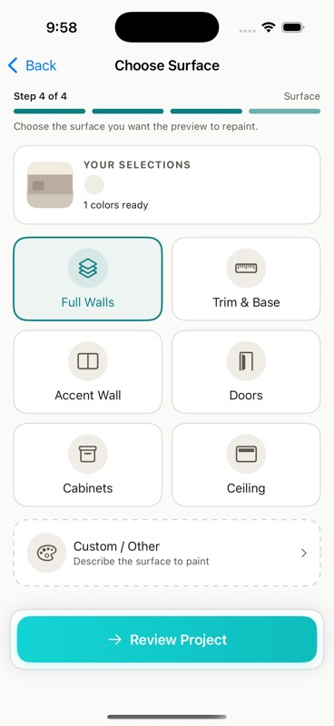
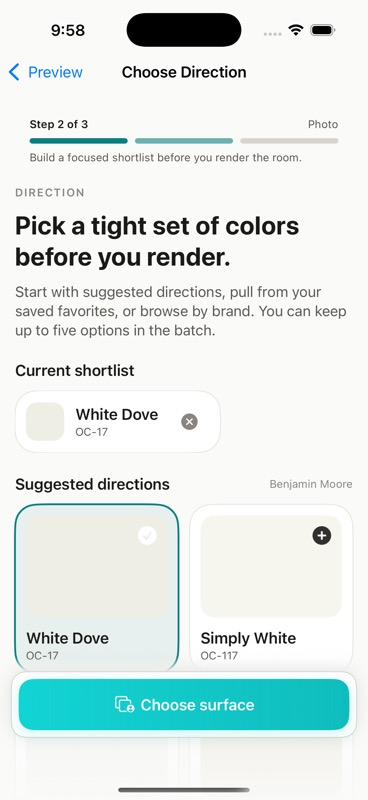
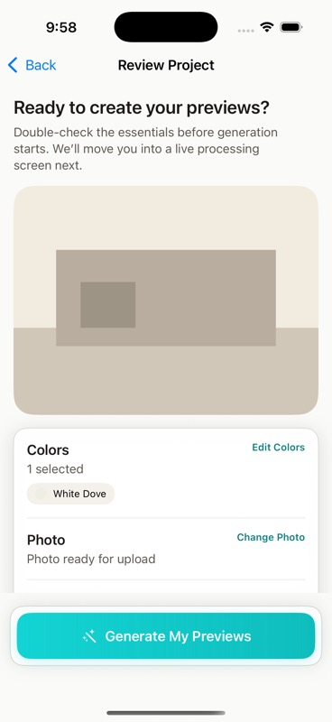
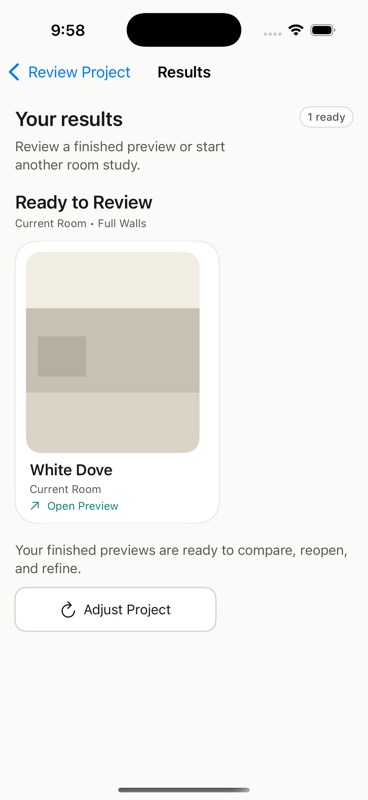
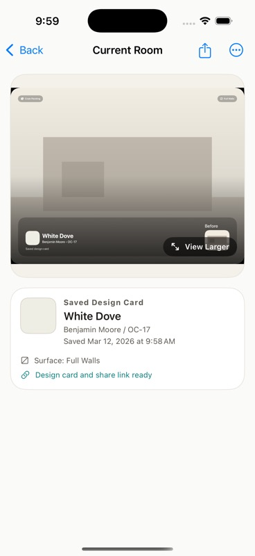
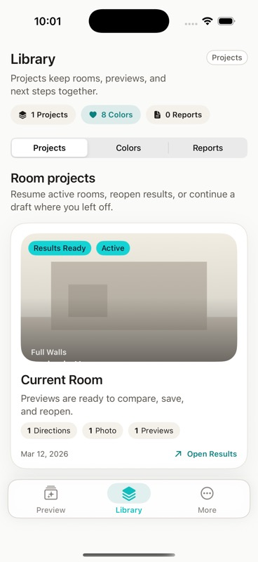
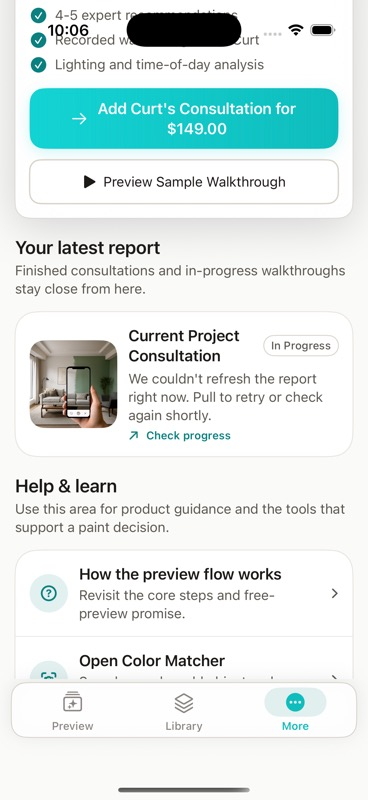

Crain Paint iOS current flow, improved clarity.
This page keeps the current app structure and screen designs recognizable. It turns the second-board audit into a lighter-touch approval artifact: better labels, stronger CTA emphasis, clearer affordances, and small hierarchy improvements inside the screens you already like.
Current journey, improved clarity
The stronger overhaul recommendation is intentionally not the direction of this pass. This version keeps the current journey recognizable and shows where the board wants clearer labels, stronger hierarchy, and better in-screen guidance.
Welcome
Keep the entry and explainer pattern, but sharpen the first CTA and promise.
Preview Home
Keep start, browse, and resume, but make the primary path and resume state easier to read.
Build Steps
Keep Choose Direction, Add Photo, Choose Surface, and Review, then tighten labels and affordances inside them.
Results
Keep the ready-state layout, but make the next action more obvious once a preview finishes.
Current Room
Keep the saved detail screen and surface the high-value actions more clearly.
Library & More
Keep both tabs intact and improve how ready previews, consultation, and report status are surfaced.
Welcome

Preview Home

Add Photo

Choose Surface

Choose Direction

Review Project

Results

Current Room Detail

Library

Resume active rooms, reopen results, or continue a draft where you left off.
More

Every approved polish change in one table
| Area | Current Issue | Approved Direction | Priority |
|---|---|---|---|
| Journey guidance | The current flow can feel inconsistent as users move between start, build, and results screens. | Clarify helper text and progress labels within the current flow instead of rewriting the journey in this pass. | Ship |
| Progress model | `Step 2 of 3` and `Step 3 of 4` appear in the same journey. | Keep the current screens, but make the progress treatment less surprising where possible. | Ship |
| Resume | `Resume project` can land in empty `Results` even when colors are missing. | Keep the current resume card, but make the saved state and likely next step clearer in the home surface. | Ship |
| Preview home | Primary and secondary routes are conceptually mixed. | Keep the current home structure and improve emphasis between Resume, Browse by brand, and Color Matcher. | Ship |
| Choose Direction | `Direction` language and tiny `+` affordances feel insider-ish and easy to miss. | Keep the current screen and shortlist model, then add an inline `All Brands / Benjamin Moore / Sherwin-Williams` filter in place. | Ship |
| Photo step | Disabled footer does not explain why the user cannot continue. | Keep the current upload panel, add clearer camera and library affordances, and retain the explicit disabled-state explanation. | Ship |
| Choose Surface | The current surface picker is strong, but the selected context and custom path can still be clearer. | Keep the current tile layout and selected-state card, then tighten helper text and custom/other guidance. | Ship |
| Review Project | The review screen is useful, but the edit rows and final button copy can read more clearly. | Keep the current review structure and improve row hierarchy, edit wording, and generation CTA clarity. | Ship |
| Results | `Adjust Project` is more explicit than the finished preview or design card. | Keep the current results card layout, but make the ready preview action more obvious before the edit action. | Ship |
| Current Room detail | Share and save actions are hidden in toolbar icons and overflow. | Keep the current saved-detail screen and surface share, save, reopen, and compare actions more clearly within it. | Ship |
| Library | The room project is strong, but the latest design card is not obvious enough there. | Keep the current Library structure and make ready previews, badges, and open-result affordances easier to spot inside each project card. | Ship |
| More / reports | Consultation, active report status, and help content all compete in one surface. | Keep the current More stack, but move consultation and report context higher within the current layout. | Ship |
| Checkout context | The user has to infer which room and color are being sent to Curt. | Improve room-context copy in the current expert surfaces without changing the overall consultation structure in this pass. | Ship |
| Reporting language | Report and saved-work helper copy drifts between Library, More, and consultation states. | Use smaller helper-copy cleanups now and leave bigger naming/IA changes out of this approval pass. | Ship |
| Color Matcher | First-board concern still open. | Keep out of this visual approval pass and re-verify separately before implementation. | Follow-up |
| Custom surface validation | First-board concern still open. | Carry forward as a separate implementation check before shipping the current builder polish. | Follow-up |